조경기사 (2021-03-07 기출문제)
1과목: 조경사
1. 다음의 사찰 배치도는 1탑1금당식의 전형적인 배치를 보여주고 있다. 이 사찰의 배치는 연지가 있고 중문, 5층 석탑, 금당, 강당이 차례로 놓여져 있으며 회랑으로 둘러져 있는 사찰의 명칭은?
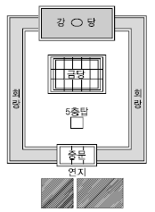
- 미륵사
- 황룡사
- 정릉사
- 정림사
(정답률: 72%)

2. 일본 강호(江戶)시대는 여러 정원의 형식들을 종합하여 회유식(回遊式) 정원이 완성된 시기였다. 이 시대의 대표적인 정원은?
- 계리궁(桂離宮), 수학원이궁(修學院離宮)
- 대덕사(大德寺), 후락원(後樂園)
- 대선원(大仙院), 영보사(永保寺)
- 서방사(西芳寺), 서천사(瑞泉寺)
(정답률: 76%)
3. 최저 노단 내 연못들 뒤 감탕나무 총림이 위치하고 서쪽에 물 풍금(Water Organ)이 유명한 로마 근교의 빌라는?
- 빌라 마다마(Villa Madama)
- 빌라 에스테(Villa d'Este)
- 빌라 랑테(Villa Lante)
- 빌라 페트라리아(Villa Petraia)
(정답률: 59%)
4. 다음 중 창덕궁에 속한 자당(池塘)의 형태가 나머지와 다른 것은?
- 빙옥지
- 부용지
- 존덕지
- 애련지
(정답률: 63%)
5. 중국 청조(淸朝)의 원림 중 3산5원에 해당하지 않는 것은?
- 만수산 소원(小園)
- 옥천산 정명원(靜明園)
- 만수산 창춘원(暢春園)
- 만수산 원명원(圓明園)
(정답률: 52%)
6. 고려시대 궁궐정원을 맡아보던 관서는?
- 내원서
- 상림원
- 장원서
- 사복시
(정답률: 79%)
7. 중국의 사자림에는 ｢견산루(見山樓)｣의 편액을 볼 수 있는데, 그 이름은 다음 중 누구의 문장에서 나왔는가?
- 왕희지(王羲之)
- 주돈이(周敦頤)
- 도연명(陶淵明)
- 황정견(黃庭堅)
(정답률: 64%)
8. 서양의 중세 수도원 정원에 나타난 사항이 아닌 것은?
- 채소원
- 약초원
- 과수원
- 자수원
(정답률: 82%)
9. 이집트인은 종교관에 따라 거대한 예배신전이나 장제 신전을 건설하고, 그 주위에 신원(神苑)을 설치하였다. 그 중 현존하는 최고(最古)의 것으로 대표적인 조경유적이 있는 신전은?
- Thutmois 3세의 신전
- Menes왕의 장제신전
- Amenophis 3세의 장제신전
- Hatshepsut여왕의 장제신전
(정답률: 85%)
10. 정약용이 조성한 다산초당(茶山草堂)에 관한 설명으로 옳은 것은?
- 신선사상을 배경으로 한 전통적인 중도형 방지이다.
- 풍수지리설을 배경으로 한 전통적인 화계수법의 정원이다.
- 유교사상을 배경으로 한 전통적인 중도형의 방지이다.
- 임전을 배경으로 한 전통적인 화계수법의 정원이다.
(정답률: 57%)
11. 질 클레망이 자연, 운동, 건축, 기교의 원리로 개조한 것은?
- 시트로엥 공원
- 라빌레뜨 공원
- 발비 공원
- 루소 공원
(정답률: 45%)
12. 고구려의 안학궁원(安鶴宮苑)에 대한 설명으로 옳은 것은?
- 수구문은 동쪽과 서쪽에 설치되어 있었다.
- 궁의 북서쪽 모서리에 태자궁이 있었다.
- 정원 터는 서문과 외전 사이와 북문과 침전 사이에 있었다.
- 가장 큰 규모의 정원 터는 동문과 내전 사이이다.
(정답률: 66%)
13. 정자에 만들어진 방의 형태가 “중심형”에 해당하지 않는 것은?
- 소쇄원 광풍각
- 담양 명옥헌
- 예천 초간정
- 화순 임대정
(정답률: 55%)
14. 옴스테드(Frederick Law Olmsted)의 센트럴 파크(Central Park)의 설계특징이 아닌 것은?
- 자연경관의 뷰(View) 및 비스타(Vista)
- 정형적인 몰(Mall) 및 대로
- 입체적 동선 체계
- 넓은 커낼(Grand Canal)
(정답률: 66%)
15. 경상북도 봉화군에 있는 권씨가의 청암정 지완(靑巖亭池園)에서 볼 수 있는 못의 형태는?
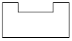
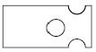
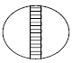
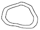
(정답률: 69%)
16. 다음 서원에 관한 설명 중 옳지 않은 것은?
- 무성서원은 최초의 가사문학 ｢상춘곡｣이 저술된 곳이다.
- 도동서원은 서원철폐령 때 훼철되지 않은 서원 중 하나이다.
- 도산서원에는 절우사 축조 후 매, 죽, 송, 국이 식재되었다.
- 병산서원의 광영지(光影池)는 자연석 지안에 방지방도형의 연못이다.
(정답률: 53%)
17. 네덜란드 르네상스의 정원과 관련된 설명 중 ( )안에 적합한 것은?
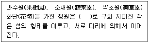
- 커 낼
- 캐스케이드
- 폭 포
- 창살울타리
(정답률: 71%)
18. 일본 침전조 정원 양식과 관련된 저서는?
- 해유복
- 송고집
- 작정기
- 벽암록
(정답률: 71%)
19. 르네상스 시기 이탈리아의 조경 발달과정에 대한 설명으로 옳지 않은 것은?
- 16세기 건축가 브라망테(Bramante)가 설계한 벨베데레(Belvedare)원은 이탈리아 빌라를 건축적 노단 양식으로 만든 계기가 된다.
- 16세기에는 메디치가가 가장 번성하여 플로렌스는 후기 르네상스의 중심지가 되었다.
- 15세기 중서부 터스카니 지방을 중심으로 발달한 초기 르네상스의 발라들은 원근법, 수학적 단계 등을 중요시하였고, 미켈로지(M.Michelozzi)는 당대의 대표적 조경가이다.
- 소 필리니(Pliny the Younger)의 빌라에 대한 연구, 비트리비우스의 ｢De Architecture｣ 등이 빌라 조경에 영향을 주었다.
(정답률: 55%)
20. 다음 중 이탈리아 르네상스 시대의 정원으로서 10개의 노단(Ten Terraces)으로 이루어진 바로크식 정원은?
- Villa Lante
- Isola Bella
- Villa Farnese
- Villa Petraia
(정답률: 75%)
2과목: 조경계획
21. 다음 조경 접근방법 중 이용자들이 공유하는 경험과 체험의 중요성을 강조하는 것은?
- 기호학적 접근
- 미학적 접근
- 환경심리적 접근
- 현상학적 접근
(정답률: 56%)
22. 다음 중 미기후(Microclimate)가 가장 안정된 상태는?
- 지표면의 알베도가 낮고, 전도율이 낮은 경우
- 지표면의 알베도가 낮고, 전도율이 높은 경우
- 지표면의 알베도가 높고, 전도율이 높은 경우
- 지표면의 알베도가 높고, 전도율이 낮은 경우
(정답률: 58%)
23. 공원관리청이 공원구역 중 일정한 지역을 자연공원특별보호구역으로 지정하여 일정 기간 사람의 출입 또는 차량의 통행을 금지⋅제한하거나, 일정한 지역을 탐방예약구간으로 지정하여 탐방객 수를 제한할 수 있는 경우에 해당되지 않는 것은?
- 자연생태계와 자연경관 등 자연공원의 보호를 위한 경우
- 인위적인 요인으로 훼손되어 자연회복이 불가능한 경우
- 자연공원에 들어가는 자의 안전을 위한 경우
- 자연공원의 체계적인 보전관리를 위하여 필요한 경우
(정답률: 59%)
24. 조경계획에서 환경심리학적 접근방법에 속하지 않는 것은?
- 도시경관의 이미지에 관한 연구
- 공원 이용자의 수를 추정하여 이를 설계에 반영하는 연구
- 공원에 있어서 이용자의 프라이버시에 관한 연구
- 주민의 사회문화적 특성을 계획에 반영하는 연구
(정답률: 50%)
25. 다음 설명에 해당하는 계획은?
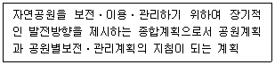
- 공원기본계획
- 공원조성계획
- 공원녹지기본계획
- 공원별 보전⋅관리계획
(정답률: 61%)
26. 문화재로서 해당 문화재가 역사적⋅학술적 가치가 크다고 인정되며, 기타의 조건을 만족할 때 ｢문화재보호법｣에 의해 사적(국가지정문화재)으로 지정될 수 없는 유형은?
- 사당 등의 제사⋅장례에 관한 유적
- 우물 등의 산업⋅교통⋅주거생활에 관한 유적
- 서원 등의 교육⋅의료⋅종교에 관한 유적
- 세계문화유산 및 자연유산의 보호에 관한 협약에 따른 자연유산에 해당하는 곳 중 자연의 미관적으로 현저한 가치를 갖는 것
(정답률: 57%)
27. 정밀토양도에서 토양의 명칭을 “Mn C2”라고 명명하였을 경우 '2'가 의미하는 것은?
- 침식정도
- 경사도
- 비옥도
- 배수정도
(정답률: 55%)
28. 래드번(Radburn) 택지계획의 개념과 가장 관계 깊은 것은?
- 차도와 보도의 분리
- 개발제한구역(Green Belt) 지정
- 자동차 전용 도로망을 최초로 도입
- 고밀도 주거지와 그 사이 넓은 녹지공간의 조화
(정답률: 70%)
29. 근린공원 계획 시에는 근린공원의 개념과 성격에 대한 명확한 이해가 선행되어야 한다. 다음 중 근린공원의 개념 정의에 적합하지 않은 것은?(문제 오류로 가답안 발표시 4번으로 발표되었지만 확정답안 발표시 모두 정답처리 되었습니다. 여기서는 가답안인 4번을 누르면 정답 처리 됩니다.)
- 일상 생활권 내에 거주하는 시민을 위한 공원
- 연령, 성별 구분 없이 누구나 이용 가능한 공원
- 주민의 규모, 구성 및 행태를 비교적 정확하게 파악하여 조성될 수 있는 공원
- 도보접근 내에 있는 여러 계층의 주민들에게 필요한 시설과 환경을 갖춰주는 공원
(정답률: 77%)
30. 다음 사후환경영향조사의 대상사업 중 조사 기간이 다른 것은?
- 도시의 개발사업 부문의 주택건설사업 및 대지조성사업
- 도시의 개발사업 부문의 마을정비구역의 조성사업
- 항만의 건설사업 부문의 항만재개발사업
- 공항의 건설사업 부문의 비행장
(정답률: 50%)
31. 다음 중 조경과 관련한 타분야에 대한 설명으로 가장 부적절한 것은?
- 건축은 주로 환경 속에 실체로 나타난 건물의 계획이나 설계에 관련된 분야이다.
- 토목은 주로 도로, 교량, 지형변화, 댐, 상하수설비 등의 설계와 공법에 관심이 있다.
- 도시계획은 도시 혹은 어느 대단위지역에 관한 사회적, 물리적 계획에 관련한다.
- 도시설계는 자연과 도시의 조화를 유도하기 위하여 자연생태계의 이해가 가장 중요하다.
(정답률: 69%)
32. 제1종 지구단위계획으로 차 없는거리(보행자 전용 도로를 지정, 차량의 출입을 금지)를 조성하고자 하는 경우 「주차장법」 규정에 의한 주차장 설치기준을 얼마까지 완화하여 적용할 수 있는가?
- 100%
- 1⑤%
- 110%
- 120%
(정답률: 38%)
33. 근린생활권근린공원의 설명으로 맞는 것은? (단, 도시공원 및 녹지 등에 관한 법률 시행규칙을 적용한다)
- 유치거리는 500m 이하
- 1개소의 면적은 1,500m2 이상
- 공원시설 부지면적은 전체의 60% 이하
- 하나의 도시지역을 초과하는 광역적인 이용에 제공할 것을 목적으로 하는 근린공원
(정답률: 51%)
34. 옥상정원 계획 시 건물, 주변현황 이용측면을 고려하여야 하는데, 그 설명이 옳지 않은 것은?
- 지반의 구조 및 강도가 흙을 놓고 수목식재 및 야외조각물 설치에 견딜 정도가 되어야 한다.
- 수목의 생육상 관수를 해야 하므로 구조체가 우수한 방수성능과 배수 계통도 양호해야 한다.
- 측면에 담장, 차폐식재로 프라이버시를 지키고, 녹음수, 정자, 퍼골라 등을 설치하여 위로부터의 보호 조치가 필요하다.
- 수종 선정이나 부재 선정에 있어서 미기후의 변화에 대응해야 하며, 교목식재는 40cm 정도의 최소유효토심을 확보해야 한다.
(정답률: 66%)
35. 시설물 배치계획에 관한 설명으로 옳지 않은 것은?
- 여러 기능이 공존하는 경우, 유사기능의 구조물들은 모아서 집단별로 배치한다.
- 다른 시설물들과 인접할 경우, 구조물들로 형성되는 옥외공간의 구성에 유의해야 한다.
- 구조물의 평면이 장방형일 때는 긴 변이 등고선에 수직이 되도록 배치한다.
- 시설물이 랜드마크적 성격을 갖고 있지 않다면, 주변경관과 조화되는 형태, 색채 등을 사용하는 것이 좋다.
(정답률: 72%)
36. Mitsch와 Gosselink가 제시한 습지생태계 복원을 위한 일반적인 원리와 가장 거리가 먼 것은?
- 습지 주변에 완충지대를 배치하라
- 범람, 가뭄, 폭풍 등으로부터 피해를 받지 않도록 주변에 제방을 계획하라
- 식물, 동물, 미생물, 토양, 물은 스스로 분포하고 유지될 수 있도록 계획하라
- 적어도 하나의 주목표와 여러 개의 부수적 목표를 설정하라
(정답률: 47%)
37. 체계화된 공원녹지의 기본 목적이 아닌 것은?
- 접근성과 개방성의 증대
- 경제성과 효율성 증대
- 포괄성과 연속성의 증대
- 상징성과 식별성의 증대
(정답률: 62%)
38. 다음 중 공장조경계획 시 고려할 사항으로 가장 거리가 먼 것은?
- 효율적인 공간구성
- 쾌적한 환경 조성
- 부가적인 효과 창출
- 신기술 적용
(정답률: 74%)
39. 연결녹지를 설치할 때 고려하여야 할 기준이나 기능이 틀린 것은? (단, 도시공원 및 녹지 등에 관한 법률 시행규칙을 적용한다)
- 산책 및 휴식을 위한 소규모 가로(街路)공원이 되도록 할 것
- 비교적 규모가 큰 숲으로 이어지거나 하천을 따라 조성되는 상징적인 녹지축 혹은 생태통로가 되도록 할 것
- 도시 내 주요 공원 및 녹지는 주거지역⋅상업지역⋅학교 그 밖에 공공시설과 연결하는 망이 형성되도록 할 것
- 녹지율(도시⋅군계획시설 면적분의 녹지면적을 말한다)은 60% 이하로 할 것
(정답률: 58%)
40. 도시 오픈스페이스의 효용성에 해당하지 않는 것은?
- 도시개발의 조절
- 도시환경의 질 개선
- 시민생활의 질 개선
- 개발 유보지의 조절
(정답률: 64%)
3과목: 조경설계
41. 다음 중 파노라믹 경관(Panoramic Landscape)의 설명으로 옳은 것은?
- 수림이나 계곡이 보이는 자연경관
- 원거리의 물체들을 시선이 가로막는 장해물 없이 조망할 수 있는 경관
- 아침 안개 또는 저녁노을과 같이 기상조건에 따라 단시간 동안만 나타나는 경관
- 원거리의 물체들이 가까이 접근해 있는 물체의 일부에 가려 액자(額子)에 넣어진 듯 보이는 경관
(정답률: 72%)
42. 린치(Lynch, 1979)가 제안한 도시구성요소에 속하지 않는 것은?
- 지역(Districts)
- 통로(Paths)
- 경관(Views)
- 랜드마크(Landmarks)
(정답률: 61%)
43. 그림과 같은 등각투상도에서 화살표 방향이 정면일 때 우측면도로 가장 적합한 것은?
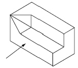
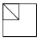
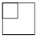
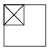
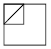
(정답률: 72%)
44. 오른손잡이 설계자의 일반적인 실선 제도 방법으로 틀린 것은?
- 눈금자, 삼각자 등은 오른쪽에 가깝게 놓는다.
- 선을 그을 때는 심을 자의 아랫변에 꼭 대고 연필을 오른쪽으로 30~40° 뉘어 사용한다.
- 연필심이 고르게 묻도록 연필을 돌리면서 빠르고 강하게 단번에 긋는다.
- 사선은 삼각자의 방향에 따라 아래에서 위로 또는 위에서 아래로 긋는다.
(정답률: 50%)
45. 다음 설명 중 ( )에 알맞은 것은?
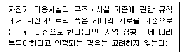
- 0.6
- 0.9
- 1.2
- 1.5
(정답률: 60%)
46. 분광반사율의 분포가 서로 다른 두 개의 색자극이 광원의 종류와 관찰자 등의 관찰조건을 일정하게 할 때에만 같은 색으로 보이는 경우는?
- 연색성
- 발광성
- 조건등색
- 색각이상
(정답률: 65%)
47. 설계과정에서 기본구상이 이루어진 다음 구체적인 세부설계에 도달하는데 이때 현실의 제약 조건 때문에 기본구상과 계획이 또 다시 재검토되고 수정되면서 원래의 구상이 점차로 구체화되는 과정을 무엇이라 하는가?
- 구상계획
- 실시계획
- 계획의 평가
- 설계에서의 환류(Feedback)
(정답률: 69%)
48. 조경설계기준상의 보행등의 배치 및 시설기준으로 옳지 않은 것은?
- 소로⋅계단⋅구석진 길⋅출입구⋅장식벽에 설치한다.
- 보행등 1회로는 보행등 10개 이하로 구성하고, 보행등의 공용접지는 5기 이하로 한다.
- 보행인의 이용에 불편함이 없는 밝기를 확보하며, 보행로의 경우 3lx 이상의 밝기를 적용한다.
- 배치간격은 설치높이의 8배 이하 거리로 하되, 등주의 높이와 연출할 공간의 분위기를 고려한다.
(정답률: 49%)
49. 다음 중 3차원적인(입체적인) 그림이 아닌 것은?
- 입단면도
- 1소점투시도
- 엑소노메트릭
- 아이소메트릭
(정답률: 67%)
50. ｢주택건설기준 등에 관한 규정｣에서 규정하고 있는 “부대시설”에 해당하는 것은?
- 안내표지판
- 주민공동시설
- 근린생활시설
- 유치원
(정답률: 56%)
51. 다음 중 시각적 밸런스(Balance)를 결정짓는 요소가 아닌 것은?
- 색 채
- 통 일
- 질 감
- 형태의 크기
(정답률: 52%)
52. 조경설계기준상의 수경시설의 설계에 대한 설명으로 옳지 않은 것은?
- 수경시설은 적설, 동결, 바람 등 지역의 기후적 특성을 고려하여 설계한다.
- 물놀이를 전제로 한 수변공간(도섭지 등)시설의 1일 용수 순환 횟수는 2회를 기준으로 한다.
- 장애물이 없는 개수로의 유량산출은 프란시스의 공식, 바진의 공식을 적용한다.
- 분수의 경우 수조의 너비는 분수 높이의 2배, 바람의 영향을 크게 받는 지역은 분수 높이의 4배를 기준으로 한다.
(정답률: 62%)
53. 밝은 태양 아래 있는 석탄은 어두운 곳에 있는 백지보다 빛을 많이 반사하고 있는데도 불구하고 석탄은 검게, 백지는 희게 보이는 현상은?
- 항상성
- 명암순응
- 비시감도
- 시감 반사율
(정답률: 48%)
54. 다음의 노외주차장의 설치에 대한 계획기준 내용 중 ( ) 안에 알맞은 것은?
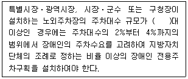
- 30
- 50
- 100
- 200
(정답률: 61%)
55. 색에도 무거워 보이는 색과 가벼워 보이는 색이 있다. 다음 중 가장 무겁게 느껴지는 색은?
- 노랑
- 주황
- 초록
- 회색
(정답률: 70%)
56. 투시도에서 실물 크기를 어림잡을 수 있도록 할 수 있는 방법은?
- 사람을 그려 넣는다.
- 정확한 축적을 표시한다.
- 집의 높이를 잘 그려 넣는다.
- 나무를 잘 배열하여 그려 넣는다.
(정답률: 69%)
57. 설계과정을 암상자(Black Box), 유리상자(Glass Box), 자유적 조직(Self-organizing System)의 세 유형으로 구분한 사람은?
- Jones
- Halprin
- Broadbent
- Alexander
(정답률: 38%)
58. 설계에 자주 이용되는 기준적 비례(Proportion)가 아닌 것은?
- 황금비
- 정사각형의 비례
- Fibonacci 수열의 비례
- 인체 비례 척도(Le Modulor)
(정답률: 59%)
59. 조경설계에 활용되는 2개의 삼각조(1조)를 이용하여 그릴 수 없는 각은?
- 15°
- 30°
- 65°
- 75°
(정답률: 68%)
60. 보도용 포장면의 설계와 관련된 설명 중 ㉠~㉣의 내용이 틀린 것은?
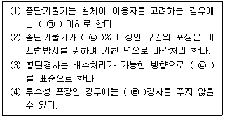
- ㉠ 1/12
- ㉡ 5
- ㉢ 2%
- ㉣ 횡단
(정답률: 60%)
4과목: 조경식재
61. 생물군집의 특성에 미치는 영향이 아닌 것은?
- 비 중
- 우점도
- 종의 다양성
- 개체군의 밀도
(정답률: 49%)
62. 생물종 보호를 위한 자연보호지구 설계의 설명 중 옳지 않은 것은?
- 대형포유동물의 종 보전을 위해서는, 면적이 큰 녹지공간이 작은 것보다 효과적이다.
- 여러 개의 녹지공간이 있을 경우, 원형으로 모여 있는 것보다 직선적으로 배열되는 것이 종의 재정착에 용이하다.
- 서로 떨어진 녹지공간 사이에 종이 이동할 수 있는 통로를 만들 경우, 종의 이입 증가와 멸종의 방지에 도움을 줄 수 있다.
- 인접한 녹지공간이 서로 가까울수록 종 보전에 효과가 높다.
(정답률: 61%)
63. 식재 설계의 물리적 요소인 질감에 관한 설명이 틀린 것은?
- 거친 텍스처에서 부드러운 텍스처로 점진적인 사용은 흥미로운 식재구성을 할 수 있다.
- 가장자리에 결각이 많은 수종은 그렇지 않는 것보다 거친 질감을 나타낸다.
- 식재를 보는 사람의 눈은 거친 곳에서 가장 고운곳으로 이동되도록 해야 한다.
- 중간지점이나 모퉁이는 제일 부드러운 질감을 갖는 수목을 배치한다.
(정답률: 41%)
64. 다음 특징에 해당되는 수종은?
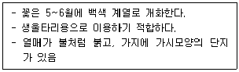
- 녹나무(Cinnamomum camphora)
- 피라칸다(Pyracantha angustifolia)
- 층층나무(Cornus controversa)
- 단풍나무(Acer palmatum)
(정답률: 49%)
65. 하천의 공간별 녹화에 관한 설명과 식재하기에 적합한 수종의 연결이 옳지 않은 것은?
- 하천 저수부는 평상시에는 유수의 영향을 받지 않는 고수부와 저수로 사이의 하안평탄지 : 물억새, 꽃창포
- 하천 둔치는 홍수 시 침수되는 공간이므로 토양유실을 방지하는 식물의 식재가 좋음 : 갯버들, 찔레꽃
- 제방사면부는 홍수 시 물의 흐름을 방해하지 않는 범위 내에서 수목식재가 가능 : 조팝나무, 싸리류
- 하안부는 물과 직접적으로 맞닿는 부분으로 유속에 영향을 받음 : 갈대, 달뿌리풀
(정답률: 35%)
66. 실내조경은 실외조경에 비해 많은 제약을 받는데, 다음 중 실내식물의 환경조건의 설명으로 가장 거리가 먼 것은?
- 광선은 제일 중요한 환경요인으로 광도, 광질, 광선의 공급시간 등에 대하여 검토해야 한다.
- 온도는 식물의 생리적 과정에 작용하는데 아열대원산 식물의 생육최적온도는 20~25℃이다.
- 물의 공급량은 빛의 공급량과 직접적인 관계가 있는데, 큰 식물에는 자체 급수용기를 사용한다.
- 식물에 있어서 최적습도는 70~90%이며, 상대습도 30% 이상이면 대부분의 식물은 적응할 수 있다.
(정답률: 41%)
67. 다음 설명은 식재설계의 미적 요소 중 어느 것에 해당되는가?
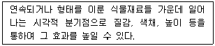
- 통일
- 강조
- 스케일
- 균형
(정답률: 60%)
68. 효과적인 교통통제를 위해 위요공간의 경우 수목의 어떤 특징을 중요시해야 하는가?
- 폭
- 높 이
- 색 채
- 질 감
(정답률: 57%)
69. 나자식물과 피자식물의 특징 설명으로 옳지 않은 것은?
- 나자식물은 단일수정을 한다.
- 은행나무는 나자식물에 속한다.
- 종자가 자방 속에 감추어져 있는 식물을 피자식물이라 한다.
- 초본류는 나자와 피자식물 모두에 들어 있다.
(정답률: 43%)
70. 보기는 고속도로식재의 기능과 종류를 연결한 것이다. ( )에 적합한 용어는?
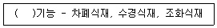
- 휴 식
- 사고방지
- 경 관
- 주 행
(정답률: 55%)
71. 다음 설명에 적합한 수종은?
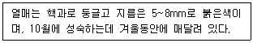
- 먼나무(Ilex rotunda)
- 머루(Vitis Coignetiae)
- 멀구슬나무(Melia azedarach)
- 병아리꽃나무(Rhodotypos scandens)
(정답률: 41%)
72. 생태 천이의 설명으로 옳은 것은?
- 천이의 순서는 나지 → 1년생초본 → 다년생초본 → 양수관목 → 음수교목 → 양수교목 순이다.
- 시간의 경과에 따른 군집변화 과정으로서 군집발전의 규칙적인 과정을 나타낸다.
- 천이의 과정을 주도하는 것은 인간이다.
- 천이는 반드시 1,000년 이내에 이루어진다.
(정답률: 61%)
73. 다음 중 상록활엽수에 해당되는 식물은?
- 화살나무(Euonymus alatus)
- 회목나무(Euonymus pauciflorus)
- 사철나무(Euonymus japonicus)
- 참빗살나무(Euonymus hamiltonianus)
(정답률: 62%)
74. 보리수나무(Elaeagnus umbellata)에 대한 설명으로 잘못된 것은?
- 키가 작은 상록활엽수이다.
- 붉은 열매는 식용이 가능하다.
- 온대 중부 이남의 산지에서 자생한다.
- 꽃은 5~6월에 피며, 백색에서 연황색으로 변한다.
(정답률: 40%)
75. 주요 잔디 초지류의 회복력이 가장 강한 것은?
- Timothy
- Tall Fescue
- Perennial Ryegrass
- Bermudagrass
(정답률: 41%)
76. 수목의 색채외 관련된 특징이 틀린 것은?
- 열매가 가을에 붉은색 계열 : 마가목
- 단풍이 홍색(紅色) 계열 : 때죽나무
- 꽃이 황색 계열 : 매자나무
- 수피가 회색 계열 : 서어나무
(정답률: 39%)
77. 일반적인 구근화훼류의 분류는 춘식과 추식으로 구분한다. 다음 중 춘식(봄 심기) 구군에 해당하지 않는 것은?
- 칸 나
- 달리아
- 글라디올러스
- 구근 아이리스
(정답률: 42%)
78. 다음 중 개화 시기가 가장 빠른 수종은?
- 배롱나무(Lagerstroemia indica)
- 무궁화(Hibiscus syriacus)
- 치자나무(Gardenia jasminoides)
- 명자나무(Chaenomeles speciosa)
(정답률: 41%)
79. 척박하고 건조한 토양에 잘 견디는 수종으로만 바르게 짝지어진 것은?
- 칠엽수, 일본목련, 단풍나무
- 자작나무, 물오리나무, 자귀나무
- 느티나무, 이팝나무, 왕벚나무
- 메타세쿼이아, 백합나무, 함박꽃나무
(정답률: 39%)
80. 다음 형태 특성 중 수형이 다른 것은?
- Larix kaempferi
- Celtis sinensis
- Picea abies
- Taxodium distichum
(정답률: 31%)
5과목: 조경시공구조학
81. 표준품셈에서 수량에 대한 환산의 설명이 틀린 것은?
- 절토량은 자연상태의 설계도의 양으로 한다.
- 수량의 단위 및 소수위는 표준품셈의 단위표준에 의한다.
- 구적기로 면적을 구할 때는 2회 측정하여 평균값으로 한다.
- 수량의 계산은 지정 소수위 이하 1위까지 구하고 끝수는 4사5입 한다.
(정답률: 46%)
82. 슬럼프 시험에 대한 설명으로 틀린 것은?
- 슬럼프 콘의 높이는 25cm이다.
- 슬럼프 콘의 지름은 위쪽이 10cm, 아래쪽이 20cm이다.
- 시공연도(Workability)의 좋고 나쁨을 판단하기 위한 실험이다.
- 슬럼프 콘 높이에서 무너져 내린 높이까지의 거리를 cm로 표시한다.
(정답률: 45%)
83. 그림과 같은 수준측량에서 B점의 표고는? (단, HA = 50.0m)
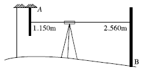
- 42.590m
- 46.290m
- 48.590m
- 51.410m
(정답률: 38%)
84. 지형도 등고선의 종류와 간격의 설명이 옳은 것은?
- 지형도가 1 : 5,000일 때 계곡선은 25m이다.
- 지형도의 표시의 기본이 되는 선이 계곡선이다.
- 간곡선의 평면간격이 클 때 주곡선의 1/2 간격으로 조곡선을 넣는다.
- 간곡선은 주곡선의 간격이 클 때 실선으로 나타낸다.
(정답률: 38%)
85. 표면유입시간 계산도표를 이용하여 우수의 유입시간을 계산하고자 한다. 다음 중 계산 시 고려요소로 가장 거리가 먼 것은?
- 토 성
- 경사도
- 최대흐름거리
- 지표면 토지이용
(정답률: 38%)
86. 목재를 구조재료로 쓸 경우 다른 재료(강철 등의 재료)보다 가장 떨어지는 강도는? (단, 가력방향은 섬유에 평행하다)
- 인장강도
- 압축강도
- 전단강도
- 휨강도
(정답률: 39%)
87. 조경공사를 위한 수량산출 시 주요 자재(시멘트, 철근 등)를 관급으로 하지 않아도 좋은 경우에 해당되지 않는 것은?
- 공사현장의 사정으로 인하여 관급함이 국가에 불리할 때
- 관급할 자재가 품귀현상으로 조달이 매우 어려울 때
- 조달청이 사실상 관급할 수 없거나 적기 공급이 어려울 때
- 소량이거나 긴급사업 등으로 행정에 소요되는 시간과 경비가 과도하게 요구될 때
(정답률: 36%)
88. 덤프트럭의 기계경비 산정에 있어 1회 사이클시간(Cm)에 포함되지 않는 것은?
- 적재시간
- 왕복시간
- 정비시간
- 적하시간
(정답률: 62%)
89. 다음 그림과 같이 하중점 C점에 P의 하중으로 외력이 작용하였을 때 휨 모멘트의 최댓값은 얼마인가?
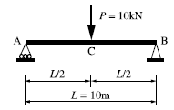
- 100kN⋅m
- 75kN⋅m
- 50kN⋅m
- 25kN⋅m
(정답률: 26%)
90. 옹벽의 안정에 관한 사항 중 적합하지 않은 것은?
- 옹벽자체 단면의 안정은 허용응력에 관계한다.
- 옹벽의 미끄러짐(滑動)은 토압과 허용지내력에 관련이 깊다.
- 옹벽의 전도(顚倒)에서 저항모멘트가 회전모멘트보다 커야만 옹벽이 안전하다.
- 옹벽의 침하(沈下)는 외력의 합력에 의하여 기초지반에 생기는 최대압축응력이 지반의 지지력보다 작으면 기초지반은 안정하다.
(정답률: 33%)
91. 석축 옹벽시공에 대한 설명이 틀린 것은?
- 찰쌓기는 메쌓기보다 비탈면에서 용수가 심하고 뒷면토압이 적을 때 설치한다.
- 신축줄눈은 찰쌓기의 높이가 변하는 곳이나 곡선부의 시점과 종점에 설치한다.
- 찰쌓기의 1일 쌓기 높이는 1.2m를 표준으로 하며, 이어쌓기 부분은 계단형으로 마감한다.
- 호박돌쌓기는 줄쌓기를 원칙으로 하고 튀어나오거나 들어가지 않도록 면을 맞추고 양 옆의 돌과도 이가 맞도록 하여야 한다.
(정답률: 39%)
92. 굳지 않은 콘크리트의 성질로서 주로 물의 양이 많고 적음에 따른 반죽의 되고 진 정도를 나타내는 용어는?
- 컨시스턴시(Consistency)
- 펌퍼빌리티(Pumpability)
- 피니셔빌리티(Finishability)
- 플라스티시티(Plasticity)
(정답률: 48%)
93. 지상고도 3,000m의 비행기 위에서 초점거리 15cm인 촬영기로 촬영한 수직 공중사진에서 50m의 교량의 크기는?
- 2.0mm
- 2.5mm
- 3.0mm
- 3.5mm
(정답률: 52%)
94. 살수관개(撒水灌漑)를 설계할 때 살수기의 균등계수는 어느 정도가 효과적인가?
- 60~65%
- 75~85%
- 85~95%
- 95% 이상
(정답률: 42%)
95. 인공지반의 식재 시 사용되는 토양의 보수성, 투수성 및 통기성을 향상시키기 위한 인공적인 다공질 경량토에 해당되지 않는 것은?
- 표토(Topsoil)
- 피트모스(Peat Moss)
- 펄라이트(Perlite)
- 버미큘라이트(Vermiculite)
(정답률: 54%)
96. 재료의 역학적(力學的) 성질에 대한 설명 중 응력(應力, Stress)에 관한 정의는?
- 구조물에 작용하는 외력(外力)
- 외력에 대하여 견디는 성질
- 구조물에 작용하는 외력에 대응하려는 내력(內力)의 크기
- 구조물에 하중이 작용할 때 저항하는 재료의 능력
(정답률: 43%)
97. 콘크리트 타설 후의 재료 분리현상에 대한 설명이 틀린 것은?
- AE제를 사용하면 억제할 수 있다.
- 단위수량이 너무 많은 경우 발생한다.
- 물시멘트비를 크게 하면 억제할 수 있다.
- 굵은 골재의 최대치수가 지나치게 클 경우 발생한다.
(정답률: 59%)
98. 배수(排水)의 지선망계통(枝線網系統)을 효율적으로 결정하는 방법이 틀린 것은?
- 우회곡절(迂廻曲折)을 피한다.
- 배수상의 분수령을 중요시한다.
- 경사가 급한 고개에는 구배가 급한 대관거를 매설하지 않는다.
- 교통이 빈번한 가로나 지하 매설물이 많은 가로에는 대관거(大菅渠)를 매설한다.
(정답률: 47%)
99. 어떤 부지 내 잔디지역의 면적 0.23ha(유출계수 0.25), 아스팔트포장 지역의 면적 0.15ha(유출계수 0.9)이며, 강우강도는 20mm/hr일 때 합리식을 이용한 총 우수유출량(m3/sec)은?
- 0.0032
- 0.0075
- 0.0107
- 0.017
(정답률: 44%)
100. 트래버스 측량 중 정확도가 가장 높으나 조정이 복잡하고 시간과 비용이 많이 요구되는 삼각망은?
- 개방형 삼각망
- 단열 삼각망
- 유심 삼각망
- 사변형 삼각망
(정답률: 46%)
6과목: 조경관리론
101. 공사원가 구성항목에 포함되는 일반관리비의 계상 설명으로 맞는 것은?
- 순공사비 합계액의 6%를 초과하여 계상할 수 없다.
- 현장사무소의 유지관리를 위하여 사용되는 비용이다.
- 관급자재에 대한 관리비 계상은 일반관리비요율에 준하여 계상한다.
- 가설사무소, 창고, 숙소, 화장실 설치비용을 포함해서 계상한다.
(정답률: 44%)
102. 굵은 골재 가운데 질석을 800~1,000℃의 고온에서 튀긴 것으로 일반적으로 비료 성분을 가지고 있지 않으며, 경량으로 흡수율이 높아 파종이나 삽목용 토양으로 사용되는 것은?
- 소성점토
- 피트모스(Peat Moss)
- 펄라이트(Perlite)
- 버미큘라이트(Vermiculite)
(정답률: 41%)
103. 안전대책 중 사고처리의 일반적인 순서로서 옳은 것은?
- 사고자의 구호 → 관계자에게 통보 → 사고 상황의 기록 → 사고 책임의 명확화
- 관계자에게 통보 → 사고자의 구호 → 사고 책임의 명확화 → 사고 상황의 기록
- 사고자의 구호 → 사고 상황의 기록 → 사고 책임의 명확화 → 관계자에게 통보
- 사고자의 구호 → 사고 책임의 명확화 → 사고 상황의 기록 → 관계자에게 통보
(정답률: 60%)
104. 일반적인 조건하에서 조경 시설물(철제 그네)의 도장, 도색은 몇 년 주기로 보수하는가?
- 1년
- 3년
- 5년
- 10년
(정답률: 46%)
1⑤. 60kg 잔디 종자에 살충제 이피엔 50% 유제를 8ppm이 되도록 처리하려고 할 때의 소요 약량(mL)은 약 얼마인가? (단, 약제의 비중 : 1.07)
- 0.5
- 0.7
- 0.9
- 1.2
(정답률: 28%)
106. 제초제의 선택성에 관여하는 생물적 요인이 아닌 것은?
- 잎의 각도
- 제초제 처리량
- 잎의 표면조직
- 생장점의 위치
(정답률: 44%)
107. 사다리 이용과 관련한 안전 조치로 적절한 것은?
- 사다리의 상부 3개 발판 이상에서 작업한다.
- 사다리를 기대 세울 때는 가능한 한 나무나 전주 등에 세워 작업한다.
- 사다리에서 작업할 때 신체의 일부를 사용하여 3점을 사다리에 접촉⋅유지한다.
- 기대는 사다리의 설치각도는 수평면에 대하여 80° 이상을 유지하여 넘어짐을 예방한다.
(정답률: 54%)
108. 병든 식물의 표면에 병원체의 영양기관이나 번식기관이 나타나 육안으로 식별되는 것을 가리키는 것은?
- 병징
- 병반
- 표징
- 병폐
(정답률: 55%)
109. 다음 중 전염성병으로 분류되지 않는 것은?
- 진균에 의한 병
- 바이러스에 의한 병
- 종자식물에 의한 병
- 토양 중의 유독물질에 의한 병
(정답률: 54%)
110. 수목의 아황산가스 피해에 대한 설명 중 잘못된 것은?
- 공중습도가 높고, 토양수분이 많을 때에 피해가 줄어든다.
- 기온이 낮은 봄철보다 여름철에 더욱 큰 피해를 입는다.
- 아황산가스는 석탄이나 중유 또는 광석 속의 유황이 연소하는 과정에서 발생한다.
- 토양 속으로도 흡수되어 토양의 산성을 높임으로써 뿌리에 피해를 주고 지력을 감퇴시키기도 한다.
(정답률: 52%)
111. 산성에 대한 저항력이 강하여 산성토양에서도 활동이 강한 미생물은?
- 세 균
- 조 류
- 방선균
- 사상균
(정답률: 44%)
112. 탄소와 화합한 질소화합물로서 물에 녹아 비교적 빨리 비효를 나타내지만 그 자체로는 유해하며 함유하는 비료로는 석회질소가 대표적인 질소 형태는?
- 요소태 질소
- 질산태 질소
- 암모니아태 질소
- 시안아미드태 질소
(정답률: 28%)
113. 식물 방제용 농약의 보관방법으로 틀린 것은?
- 농약은 직사광선을 피하고 통풍이 잘 되는 곳에 보관한다.
- 농약은 잠금장치가 있는 전용 보관함에 보관한다.
- 사용하고 남은 농약은 다른 용기에 담아 보관한다.
- 농약 빈병과 농약 폐기물은 분리해서 처리한다.
(정답률: 65%)
114. 공원 관리업무 수행 시 도급방식 관리에 대한 설명 중 틀린 것은?
- 관리비가 싸다.
- 임기응변적 조처가 가능하다.
- 관리주체가 보유한 설비로는 불가능한 업무에 적합하다.
- 전문적 지식, 기능을 가진 전문가를 통한 양질의 서비스를 기할 수 있다.
(정답률: 52%)
115. 낙엽수는 낙엽 후부터 다음해 새로운 눈이 싹트기 전, 상록수는 싹트기 시작하는 전후의 시기에 실시하는 전정은?
- 동기전정
- 기본전정
- 솎음전정
- 하기전정
(정답률: 53%)
116. 참나무류에 발생하는 참나무시들음병의 병균을 매개하는 곤충은?
- 참나무방패벌레
- 참나무하늘소
- 광릉긴나무좀
- 갈참나무비단벌레
(정답률: 56%)
117. 레크리에이션 수용능력의 결정인자는 공정인자와 가변인자로 구분되는데 다음 중 고정적 결정인자가 아닌 것은?
- 특정 활동에 필요한 사람의 수
- 특정 활동에 대한 참여자의 반응정도
- 특정 활동에 필요한 공간의 최소면적
- 특정 활동에 의한 이용의 영향에 대한 회복능력
(정답률: 36%)
118. 조경시설물 보관 창고에 전기화재가 발생하였을 때, 사용하는 소화기로 가장 적합한 것은?
- A급 소화기
- B급 소화기
- C급 소화기
- D급 소화기
(정답률: 42%)
119. 다음 토양 중 침식(Erosion)을 받을 소지가 가장 작은 것은?
- 투수력이 큰 토양
- 팽창성이 큰 토양
- 가소성이 큰 토양
- Na-교질이 많은 토양
(정답률: 39%)
120. 소나무혹병의 중간 기주에 해당되는 것은?
- 송이풀
- 졸참나무
- 까치밥나무
- 향나무
(정답률: 40%)